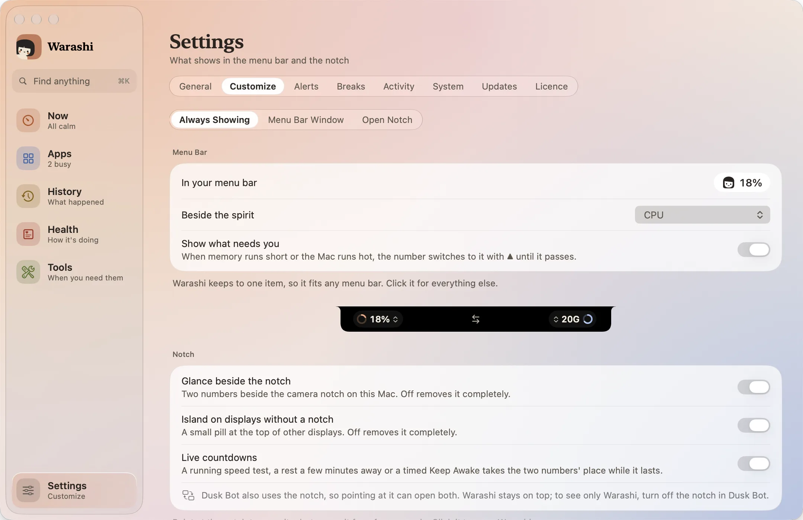
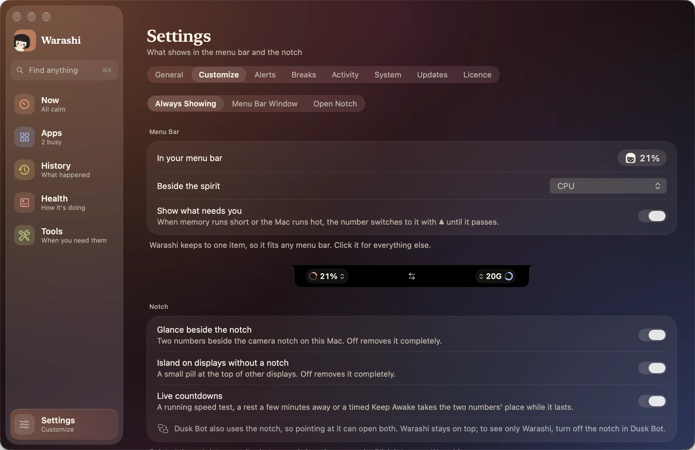
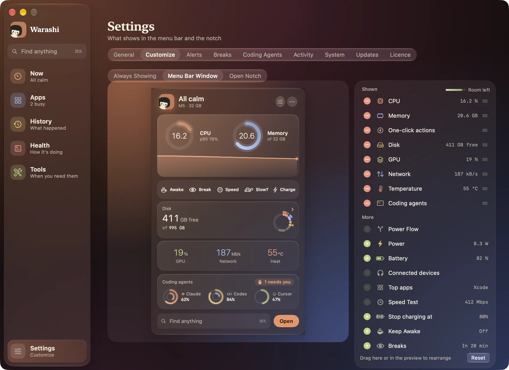

Tutto ciò che tieni sullo schermo si imposta in un solo posto: Impostazioni › Personalizza, con due schede. Ognuna mostra la cosa vera, in tempo reale, accanto alle tue scelte. Ogni modifica compare subito e non c'è nulla da salvare.
- Sempre visibile
Cosa resta sempre sullo schermo. Accanto allo spiritello sceglie la lettura nella barra dei menu, oppure Niente, solo lo spiritello, e Mostra cosa richiede attenzione gli permette di passare a un avviso. Sotto, la tacca: Mostra cosa succede accanto alla tacca, l'isola e Valori quando non succede nulla, che mostra i due numeri che scegli a sinistra e a destra della tacca (le frecce li scambiano).


- Finestra della barra dei menu
A sinistra, la finestra della barra dei menu stessa. Sotto Mostrati, premi − per togliere qualcosa; sotto Altro, premi + per aggiungerlo. Prendi qualsiasi cosa nell'anteprima e rilasciala dove vuoi: il resto si sposta. Un piccolo indicatore mostra quanto spazio resta.


- Ricomincia
Ripristina compare quando qualcosa è diverso dal predefinito e rimette tutto a posto.
Scorciatoie per arrivarci
Il pulsante con i cursori in alto nella finestra della barra dei menu apre la scheda Finestra della barra dei menu.
Come si dispongono le cose
La finestra della barra dei menu ha una sola dimensione massima e non scorre mai, quindi sta sempre nel tuo schermo. Quando è piena, + si attenua: prima rimuovi qualcosa. CPU e memoria condividono la parte alta come anelli; i valori brevi si allineano in una riga; il resto si accoppia a due a due.
La tacca si organizza da sola: mostra cosa sta succedendo, prima le cose più importanti. Vedi Tacca e isola.
Se qualcosa non va
- Qualcosa non viene offerto: Batteria, Flusso di energia e Interrompi la carica a compaiono solo sui Mac con una batteria, e Collegato solo quando qualcosa è collegato.
Altro in Risoluzione dei problemi, oppure scrivi a adam@warashi.app.